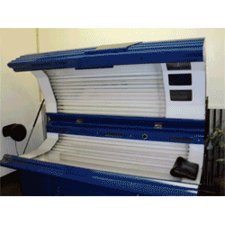
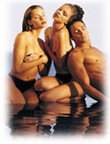

| |
Why buy used
tanning beds?
by
Rick Houston
I have been selling new and used tanning beds for the past 12 years and I can
honestly say now is NOT the time to buy
used tanning salon equipment.
Why? Allow me to explain my reasoning.
We are five years removed from
the recession of 2006-2008, when
many new salons, like
Planet Beach,
Hollywood Tans,
and others sprung up in the middle
of the night. These franchises
cost over $150k new and quickly went
into the red. Mostly because
of unrealistic rent prices which
have now resettled but largely in
part to the exorbitant interest
rates banks and equipment leasing
companies were charging (+40%) for
this equipment.
Opportunities have been created
for folks opening new salons and
most towns now have a "shortage" of
tanning salons from the
over-correction, but is buying
used salon equipment the way to go
in 2013? It depends on how you set
your expectations.
Beginning in 2009 and through
2011 there were fantastic deals at
auctions and from landlords of
abandoned salons around the country
of
used tanning
salon equipment with very
few hours of operation. These
deals are gone now and what is left
is equipment from 2006 and later.
Now SEVEN years old and more.
I can also report that over half
of the customers I delivered and
installed used tanning beds to were
NOT happy. Which made my
unhappy too. Why were so many
customers unhappy with previously
owned equipment? Mostly
their high expectations, but here
are a few of the most common reasons why:
1. Tanning beds should be
cleaned on a daily basis and when they
are not cleaned properly, begin to
fill with dead skin, hair, and lotions
from customers. When you buy
used equipment you are buying years
of dead skin and must be ready to
break the beds down and clean them
thoroughly.
2. Tanning equipment requires
you change the
tanning bed bulbs
frequently and many failed salons, due
to lack of funds, did not do this.
Therefore, when you buy used
equipment, you MUST be ready to buy
new
tanning lamps.
You can expect to spend between $300
and $1500 per unit, depending on
number and type of bulbs.
3. When you buy
used tanning
beds you will need to get
parts and service for those models
immediately.
You should know that over half of
all tanning equipment manufacturers
have gone out of business or have
been swallowed up by Sun Ergoline.
If you buy a Pure Tan, Sun Capsule,
or any other off brand you may never
get parts or service. Call an
800 number for the manufacturer
before you buy and know if you can get a
technician on the line. You
should have your own handy man or
electrician on standby as there are
NO
tanning bed
repair guys left.
4. If you are
opening a new
tanning salon you should
be careful about the "first
impression" message you
send to clients when you place them
in used equipment which is several
years old, in need of
maintenance, and may appear dated.
My advice is to take a strong
look at
new tanning
beds or demo models with
few or zero hours. You can buy
new 32 lamp beds for $5,000 and
level 3 tanning beds for $7,500
so think twice before spending $5k
on used level three models. I DO recommend buying
slightly
used high
pressure tanning beds and
spray tan
booths like the Versa Spa
models to save money from the crazy-too-high $30k+ prices of new models.
Call me at 800-760-6017 for a
free consultation and I will help
you decide if
used tanning
salon equipment is right
for you and who to buy it from.
I can also help create your own
brand of indoor tanning equipment
with custom colors and your logo at unbelievable prices direct from the
manufacturer.
More...
|
|
|
|
|
|

|
| |
 |
|
2007 StarPower 548
This is the standard for level 3 tanning in many salons. Made by ETS, the StarPower 548, or Platinum 52 for Planet Beach,
boasts
48
lamps
with
shoulder
tanners.
Price
is
$4,995
with
free
delivery
to
New
York
and
East
Coast
and
+$500
for
delivery
to
California
and
West
Coast.
Read
more
here...
|
|
| |
 |
|
2012 Tropical Rayz 24
I have three home tanning beds by Tropical Rayz for sale for only $2,495 each. These 2012 models
were overstocked and have new bulbs with zero hours and full life-time warranty from the factory.
Color choices are Yellow with Magenta (pictured), Yellow with Red accents, and Kawasaki Green.
Read
more
here...
|
|
| |
 |
|
2012 Custom Wide Body 383
Shown here is a brand new Wide Body tanning bed in custom
jet black color. This 12 minute bed has 38 lamps with 3 facials with zero hours.
Price is only
$7,500 for this model and only +$1,000 for the color and logo of your choice.
Read
more
here...
|
|
| |
 |
|
2009 ETS HP Velocity 1000
You can now upgrade your salon with this level 4 high pressure tanning bed from ETS called the Velocity 1000.
This is the new standard for 360 degree tanning and a "wow" bed that will bring customers from miles around. This unit is crated and
ready to ship from the Central USA for only $11,500. Call 800-760-6017 for shipping quote.
Read
more
here...
|
|
| |
 |
|
2012 South Beach Tanning Booth
We have one demo model South Beach stand up tanning booth for sale like the one pictured here with the neon kit at the top
for only
$7,995. This price includes delivery East of the Mississippi, brand new reflector lamps, and acrylic lamp covers. Why buy
used stand ups when you can buy this amazing deal.
Read
more
here...
|
|
| |
 |
|
2010 VersaSpa Spray Tan Booth
You can now buy a like-new automatic UV free spray tanning booth
made by Magic Tan called VersaSpa for only
$14,995. This cool new model
features voice prompt, heaters, blow dryer, and the most recent software updates.
This unit is crated and ready to be shipped from the Midwest USA.
Read
more
here...
|
|
| |
 |
|
2004 Ergoline Affinity 500
This is the Cadillac of the industry...the
EV500
is
the
Affinity
or Evolution model from Ergoline which features
43-160 watt lamps, 3-500 watt facials, LCD display and less than 2000 hours. We have two priced at
$7,495 each, crated and ready to ship
Read
more
here...
|
|
|
|